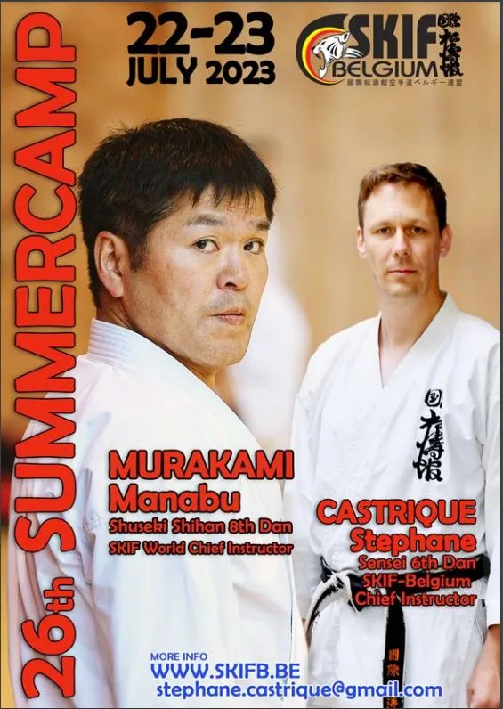

Le SKIF Belgium organisera le 22/23 Juillet 2023 le stage d’été « SUMMER CAMP 2023 »
So this year the summercamp will be held in my own hometown of Mortsel (close to Antwerp)
The instructors will be Murakami Manabu Shuseki Shihan 8th dan (World Chief Instructor of SKIF) and
myself, Castrique Stephane 6th dan. (Chief-Instructor of SKIF-Belgium)
Venue : Satori Kwai Dojo, Amedeus Stockmanslei 121, 2640 Mortsel.
Schedule :
Saturday 22nd of July
10.30-12.00 Training for dojo instructors and their assistant(s) only. Minimum level is shodan.
14.00-17.00 General training divided in 2 groups, training with each instructor with a hydration break in the middle.
08.00-11.00 Social gathering (drinks and fingerfood) at SKIF-Belgium Honbu Dojo Krijgsbaan 39, 2640 Mortsel
Sunday 23rd of July
09.00-10.30 Dan grading at SKIF-Belgium Honbu Dojo (nidan and up) Krijgsbaan 39, 2640 Mortsel
11.00-14.00 General training divided in 2 groups, training with each instructor with a hydration break in the middle.
Price : Instructors training on the 22nd SKIF-Belgium
dojo instructors Free of charge
Their assistants 10 euro
Instructors from abroad 10 euro
For this training you have to register before by Email because places are limited!
Email to : stephane.castrique@gmail.com
General training on Saturday 22nd and Sunday 23rd full camp : 50 euro
Training on Saturday 22nd only 30 euro
Training on Sunday 23rd only 30 euro